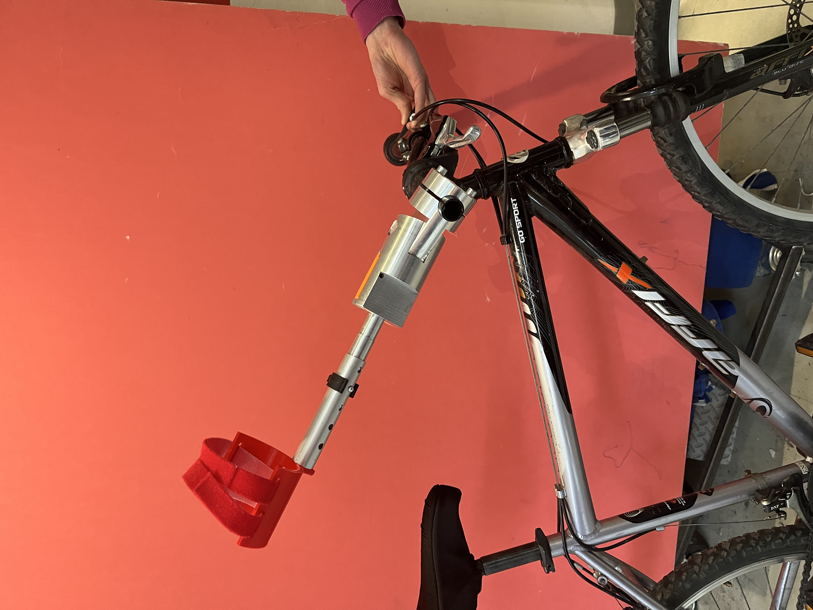
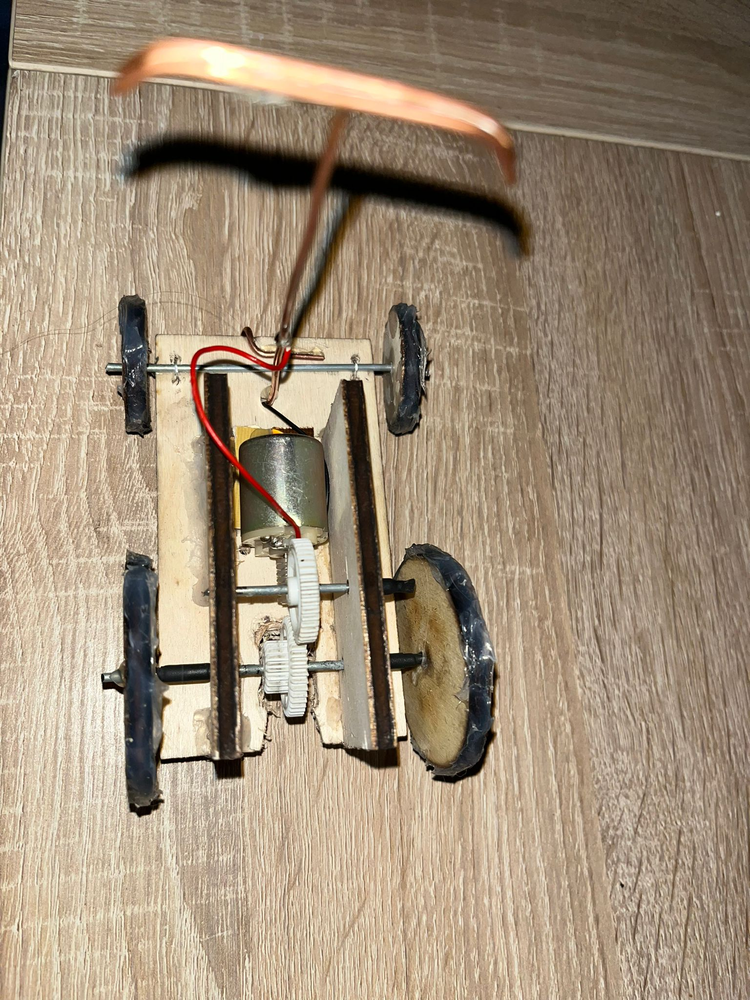
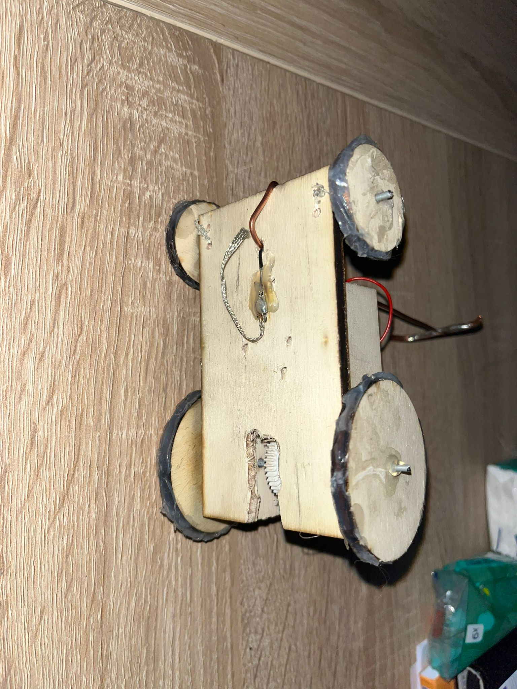
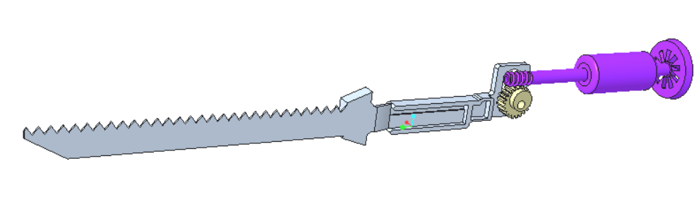
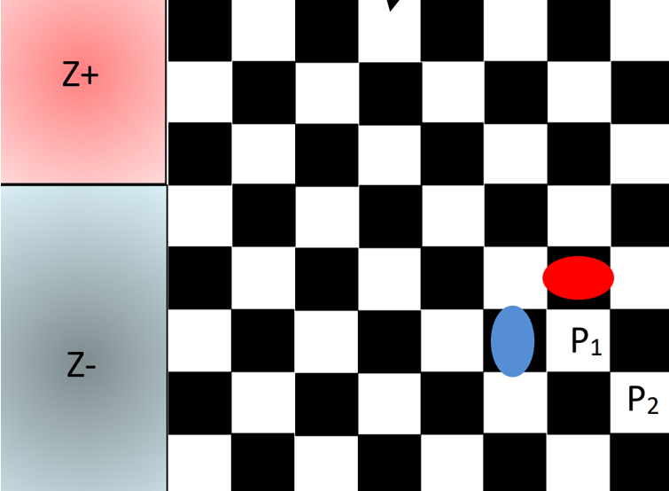

Mes Projets
Système de rehausse pour robot agricole
Contexte et enjeu
Pour l'entreprise OSIRIS Agriculture, l'objectif du projet était de concevoir et d'intégrer un système permettant de faire varier la garde au sol de leur robot d'irrigation. Ce dispositif devait permettre le passage au-dessus de cultures hautes sans les endommager, tout en garantissant un gabarit conforme pour le transport routier.

Illustration de principe d'un système de levage par vérin mécanique (image d'illustration, non issue du projet réel).

Illustration de principe d'un robot agricole autonome équipé d'une garde au sol réglable (image d'illustration, non issue du projet réel).
Objectifs
- Permettre la rehausse de la garde au sol du robot agricole.
- Assurer un transport routier conforme aux dimensions réglementaires.
Mon rôle
- Réalisation d'un état de l'art et sélection du principe de levage le plus adapté.
- Dimensionnement et validation du système retenu.
- Conception numérique et intégration sur la maquette 3D existante.
- Simulation mécanique du système à l'aide d'ANSYS Workbench.
Méthodologie
- Échanges avec le client pour définir précisément les besoins fonctionnels.
- Recherche et analyse de solutions existantes.
- Comparaison des concepts via un tableau d'aide à la décision.
- Modélisation 3D et conception paramétrique sous CATIA V6.
- Calculs numériques et vérification de la résistance mécanique du système.
Technologies & outils
Dimensionnement : fiches techniques fournisseurs, calculs de résistance des matériaux.
Logiciels utilisés : CATIA V6, ANSYS Workbench, Excel, Word.
Leçons apprises
Ce projet, mené en fin de formation, a été l'occasion de mobiliser de manière transversale l'ensemble des compétences acquises au cours du cycle ingénieur : conception mécanique, résistance des matériaux, simulation numérique, choix de composants standards et gestion de projet. Il a renforcé ma capacité à synthétiser plusieurs domaines techniques pour aboutir à une solution fonctionnelle et industrialisable.
Projet Cible de Rugby
Contexte et enjeu
En partenariat avec le Stade Rochelais, l'objectif était de concevoir un dispositif de simulation pour optimiser l'entraînement des touches, en reproduisant fidèlement les déplacements et la dynamique des joueurs.

Vue de face

Vue de droite

Vue isométrique
Objectifs
- Reproduire les déplacements des talonneurs en phase de touche
- Offrir un retour en temps réel sur la précision des lancers
- Améliorer la réactivité des joueurs
- Diversifier les stratégies des joueurs
Mon rôle
- Mouvement horizontal de la cible, de la conception au dimensionnement
- Choix des composants mécaniques : rails, galets, fixations
- Dimensionnement : galets, vis de fixation, courroie de transmission
Méthodologie
- Échange avec le client pour bien comprendre ses besoins
- Recherche des solutions existantes et analyse de leurs limites
- Phase de réflexion, sélection via tableau comparatif
- Calculs, modélisation 3D sous CATIA V6
Technologies & outils
Dimensionnement : Fiches techniques fournisseurs, calculs de résistance des matériaux.
Logiciels utilisés : CATIA V6, Excel, Word.
Leçons apprises
Approfondissement de la gestion de projet, du dimensionnement mécanique et de la collaboration en équipe pluridisciplinaire.
Projet de prothèse pour amputés post-cubitaux
Contexte et enjeu
À la demande d'une ergothérapeute, nous avons conçu une prothèse d'avant-bras destinée à la pratique du vélo, réglable et adaptable à différents patients, facilitant la rééducation.

Premiers plans fonctionnels pour comprendre les contraintes.

Modélisation 3D de la prothèse sous CATIA.

Prothèse finale fabriquée et testée.
Objectifs
- Réglable en longueur, adaptable à plusieurs patients
- Fixation ferme et sécurisée au vélo et au membre
- Sécurité en cas de chute, détachement facile
- Équilibre, stabilité, modularité
Mon rôle
- Conception du système de liaison vélo/avant-bras
- Croquis fonctionnels, modélisation CATIA, plans pour fabrication
- Optimisation de la géométrie, intégration mécanique équipe
Méthodologie
- Échanges client, recherche solutions existantes
- Matrice de choix, calculs, CAO, plans
- Fabrication : impression 3D, usinage
Technologies & outils
Logiciels : CATIA V6, Excel, Word.
Machines : Tour, fraiseuse, imprimante 3D.
Dimensionnement : Calculs RDM, simulations.
Leçons apprises
Gestion de projet, CAO avancée, fabrication assistée, collaboration technique.
Challenge Transition Écologique et Sociétale
Contexte et enjeu
Projet d'équipe d'ingénieurs : rendre les poids lourds plus écologiques grâce à une alimentation électrique via caténaires sur autoroute (système de pantographe).

Prototype – vue de dessus

Prototype – vue de dessous
Objectifs
- Réduire les émissions polluantes du transport poids lourds
- Concevoir un prototype de captation d'énergie
- Évaluer la faisabilité et l'impact environnemental
Mon rôle
- Conception et fabrication de la maquette en bois découpée laser
- Réemploi de composants récupérés
- Présentation et restitution équipe multidisciplinaire
Méthodologie
- Brainstorming solutions transports
- Évaluation technique et environnementale
- Maquette physique à coût minimal
Technologies & outils
Machines : découpe laser, multimètre, composants de récupération.
Logiciels : Canva, PowerPoint, tableurs.
Leçons apprises
Première approche écoconception ; importance de la communication et de la gestion interdisciplinaire.
Projet couteau électrique
Contexte et enjeu
Étude et modélisation mécanique complète d'un couteau électrique domestique. Analyse cinématique, transformation du mouvement moteur en mouvement alternatif des lames, visualisation 3D.

Couteau électrique réel, point de départ : démontage et observation des pièces.

Modélisation 3D du mécanisme reconstitué sur Creo Parametric.

Système mécanique interne modélisé.
Objectifs
- Modéliser les pièces sur Creo Parametric
- Analyser le fonctionnement cinématique
- Illustrer le système par animation
Mon rôle
- Analyse cinématique et modélisation complète
- Animation du mécanisme sous Creo
Méthodologie
- Démontage du système, identification des composants
- Analyse des liaisons, mesures précises
- Modélisation 3D, animation, validation
Technologies & outils
Logiciel : Creo Parametric.
Outils : Pied à coulisse, réglet.
Matériel réel analysé
Leçons apprises
Maîtrise de la modélisation 3D, analyse cinématique, animation, travail en binôme.
Projet Anglais / Jeu de société F1
Contexte et enjeu
Projet de langues en équipe : création d'un jeu de société Formule 1 inspiré du Trivial Pursuit (conception, rédaction règles, fabrication physique, jeu jouable en classe).

Carte facile

Carte moyenne

Carte difficile
Objectifs
- Créer un jeu original
- Améliorer l'anglais en équipe par un projet ludique
- Concevoir un jeu jouable
Mon rôle
- Définition du support, élaboration des règles
- Rédaction et classement des questions
Méthodologie
- Choix du support
- Règles, questions, impression, pions 3D
Technologies & outils
Machines : Imprimante 3D, imprimante classique, plastifieuse.
Logiciels : Logiciel d'impression 3D, Canva.
Leçons apprises
Travail d'équipe, communication, rigueur, créativité, pédagogie.
Projet Robot sur damier
Contexte et enjeu
Projet d'équipe de 4 élèves : robot autonome évoluant sur un damier d'échecs, devant saisir et ramener un objet en évitant des obstacles. Programmation, conception, modélisation, tests.

Damier sur lequel évolue le robot, avec zones d'objectif et obstacles.

Vue 3/4 arrière de la modélisation du robot.

Modélisation vue de dessous, mise en évidence des capteurs.
Objectifs
- Développer une accroche fiable pour tracter un objet
- Programmer le déplacement autonome
- Optimiser la détection de lignes, obstacles
Mon rôle
- Choix des composants, assemblage, conception CAO
- Développement et tests du code, intégration capteurs
Méthodologie
- Choix technique, conception CAO, assemblage, tests
- Programmation embarquée, débogage
Technologies & outils
Logiciels : Visual Studio Code, outils schéma composants.
Matériel : Arduino, capteurs, moteurs, breadboard, etc.
Leçons apprises
Programmation embarquée, intégration de capteurs, travail en équipe, tests rigoureux.